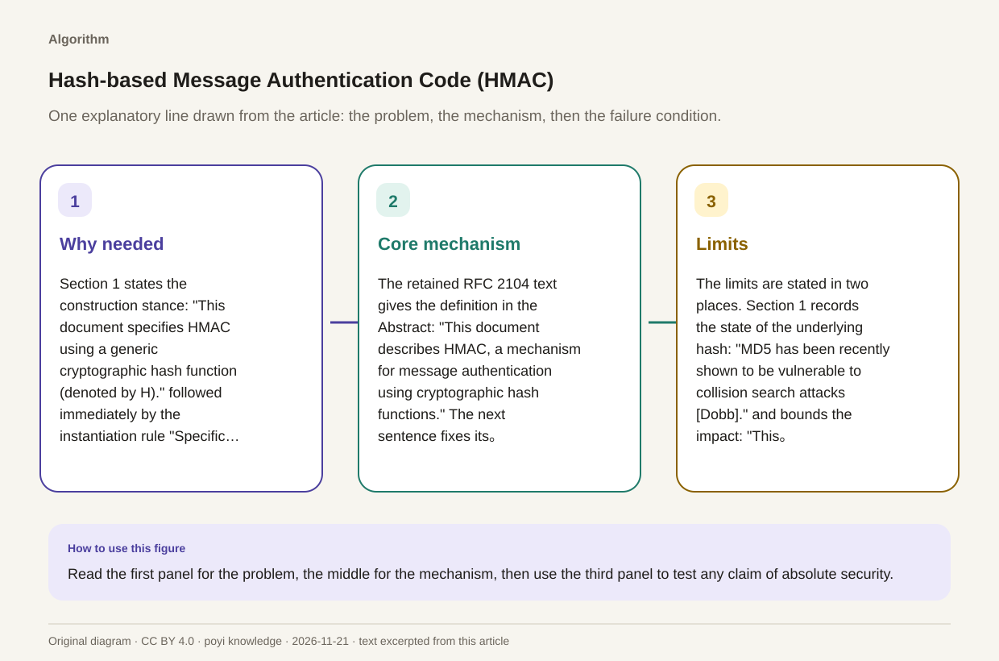
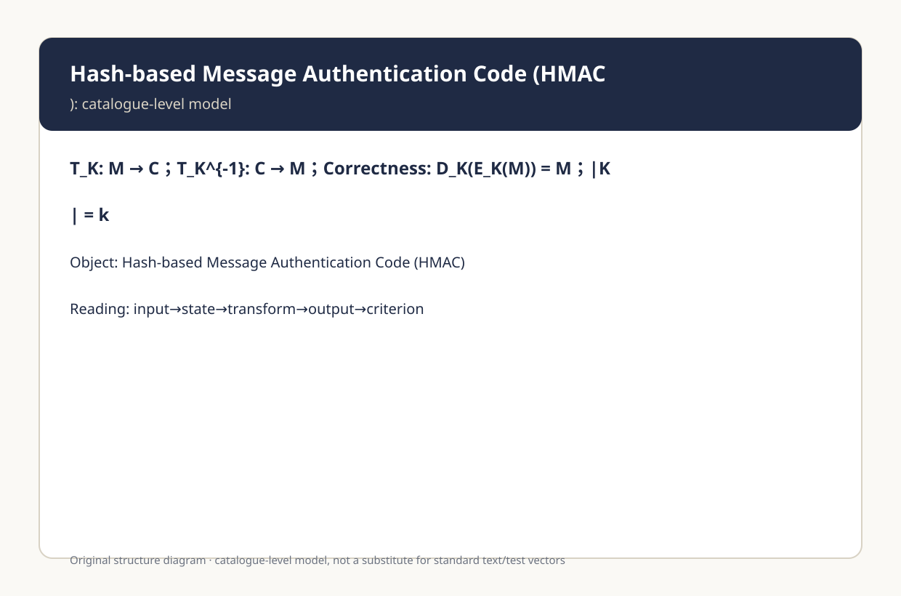

Principles
Algorithm: Hash-based Message Authentication Code (HMAC 密钥化哈希认证码). The retained RFC 2104 text gives the definition in the Abstract: "This document describes HMAC, a mechanism for message authentication using cryptographic hash functions." The next sentence fixes its relation to a key and a hash: "HMAC can be used with any iterative cryptographic hash function, e.g., MD5, SHA-1, in combination with a secret shared key." both sitting in the front Abstract block (reported as front in this copy). The skeleton is exactly this: an iterative hash function used as the building block together with a shared secret key to produce a message authentication code; the strength is attributed by the same paragraph, "The cryptographic strength of HMAC depends on the properties of the underlying hash function."
Section 2 writes the construction out as seven executable steps. It first defines the two fixed strings: "ipad = the byte 0x36 repeated B times" and "opad = the byte 0x5C repeated B times." (each on its own printed line, with 0x5C capitalised as the source prints it), then gives the whole expression on one line, "H(K XOR opad, H(K XOR ipad, text))". The numbered steps quoted are "(1) append zeros to the end of K to create a B byte string", "(4) apply H to the stream generated in step (3)", "(5) XOR (bitwise exclusive-OR) the B byte string computed in" (the line ends there - "step (1) with opad" is on the next line, so it is quoted only to the line end) and "(7) apply H to the stream generated in step (6) and output". The long-key rule in the same section reads "Applications that use keys longer…than B bytes will first hash the key using H and then use the…resultant L byte string as the actual key to HMAC." - the sentence is split across three hard-wrapped lines, quoted here segment by segment, each ellipsis marking one of those line breaks. Worked example (Test Case 2, reproduced as hmac-calc-construction-steps): the key 4a656665 is zero-padded to a 64-byte block key by step (1); step (2) XOR with ipad yields a string beginning 7c535053 with the remaining 60 bytes all 36; step (5) XOR with opad yields a string beginning 16393a39 with the remaining 60 bytes all 5c; the step (4) inner digest is 32 bytes long; the step (7) output is 5bdcc146bf60754e6a042426089575c75a003f089d2739839dec58b964ec3843, which is what the retained RFC 4231 prints at §4.3 lines 203-204. The intermediates are computed by this batch from the steps quoted above - the retained source prints only the final value.

Why it matters
Section 1 states the construction stance: "This document specifies HMAC using a generic cryptographic hash function (denoted by H)." followed immediately by the instantiation rule "Specific instantiations of HMAC need to define a particular hash function." the file defining a hash-agnostic generic construction and the choice of hash deferred to instantiation. That is why HMAC is built as a nesting that can swap the underlying hash: hash functions that already run well in software and are widely available can be reused unchanged. The abstract sentence also pushes strength down to the hash: "The cryptographic strength of HMAC depends on the properties of the underlying hash function." (front). The motive is thus to reuse existing hashes and keep their performance while resting security on ordinary assumptions about H.
Applications
The usage conditions sit in the numbered sections, at must level for keys and recommend level for output. Section 3 states the key rule in plain imperatival prose: "Keys need to be chosen at random (or using a cryptographically strong pseudo-random generator seeded with a random seed), and periodically refreshed." keys must be random and refreshed periodically. Section 5 puts truncation at recommend level: "We recommend that the output length t be not less than half the length of the hash output (to match the birthday attack bound) and not less than 80 bits" the truncated length t advised to be at least half the hash output and at least 80 bits. So the use is to run HMAC over one chosen hash for message authentication, with these two grades of guidance for key management and output truncation; this dossier quotes the retained RFC 2104 text, not the row's primary citation FIPS 198-1.
Section 4.1 of the retained RFC 4231 states the standing of these vectors: "The test vectors in this document have been cross-verified by three" followed by "independent implementations." - one sentence broken by a hard line wrap, so it is quoted in two spans. Their form is stated by "Keys, data, and digests are provided in hex." Test Cases 1 to 7 (§4.2-§4.8) each print one line saying what the case covers: "Test with a key shorter than the length of the HMAC output.", a combined key-plus-data length above 64 bytes ("Test with a combined length of key and data that is larger than 64" then "bytes (= block-size of SHA-224 and SHA-256)."), output truncation ("Test with a truncation of output to 128 bits."), and a key above 128 bytes ("Test with a key larger than 128 bytes (= block-size of SHA-384 and" then "SHA-512)."). Section 3.2 prints "element may specify the truncated length of the scheme output." - the truncated length is carried by that element. The expected values this entry reproduces are exactly the ones printed there.
Every key, datum and digest of the seven cases is locatable value by value: this batch stores what was read from the retained text together with its line numbers in hmac-vectors.json - the extractor reads the file that build/corpora.json registers for the source id rfc4231 - and its artefacts record two layout facts: Test Case 3 prints the field label Key without the equals sign the other six cases carry, and Test Case 5 prints 16-byte digests because that case truncates the output to 128 bits. The reproduction is recorded in calculations: all 28 printed digests are reproduced by a construction written from the §2 steps, and each one also agrees with Node.js own implementation.
What this batch reproduces: all 28 printed digests - 7 test cases times 4 hash variants - are reproduced by an implementation written from the §2 steps (hmac-calc-rfc4231-vectors); the 16-byte outputs of Test Case 5 are checked against the truncation rule (hmac-calc-truncation-rule); the 131-byte keys of Test Cases 6 and 7 take the H(K) branch and give the same result as using H(K) as the key itself (hmac-calc-longkey-rule); and a further 140 length combinations agree with the implementation Node.js ships (hmac-calc-oracle-agreement). The agreements and what they assert are recorded in this dossier s calculations and verification-results files.

Limits & attacks
The limits are stated in two places. Section 1 records the state of the underlying hash: "MD5 has been recently shown to be vulnerable to collision search attacks [Dobb]." and bounds the impact: "This attack and other currently known weaknesses of MD5 do not compromise the use of MD5 within HMAC as specified in this document (see [Dobb]); however, SHA-1 appears to be a cryptographically stronger function." the known MD5 collisions did not, at the time of writing, compromise MD5 inside HMAC, yet SHA-1 is described as stronger. Section 6 gives the theoretical strongest attack, in the source followed by the ASCII-quoted term birthday attack, so it is quoted only up to H: "The strongest attack known against HMAC is based on the frequency of collisions for the hash function H" the attack surface reduced to the collision frequency of the chosen H. Together: HMAC's security moves with the collision resistance of the selected hash, and MD5 is the named weak component.
History
Read as printed, the front matter gives the title line HMAC: Keyed-Hashing for Message Authentication, the author line Krawczyk, Bellare and Canetti, and the header Request for Comments: 2104 with Category: Informational (header lines stated outside the quotes). Its Status of This Memo paragraph reads: "This memo provides information for the Internet community." "This memo does not specify an Internet standard of any kind." "Distribution of this memo is unlimited." an informational document that specifies no Internet standard. The edition disagreement is recorded here: this retained file's date line prints February 1997, while the catalog row prints that citation title as RFC 2104(1999) and lists FIPS 198-1 (2008) as its primary source; every assertion in this dossier is bound to the retained RFC 2104 text and takes the date from what it prints.
Worked example & verification
Worked example
Take one published or standard test vector, record the input, the ordered steps and the byte-exact output, then compare with an independent implementation. Where no citable numeric vector is available, the entry records only structural steps and does not invent an output.
References
- Wikipedia search entry for HMAC 密钥化哈希认证码. https://zh.wikipedia.org/w/index.php?search=HMAC%20%E5%AF%86%E9%92%A5%E5%8C%96%E5%93%88%E5%B8%8C%E8%AE%A4%E8%AF%81%E7%A0%81
- Handbook of Applied Cryptography (Menezes, van Oorschot, Vanstone). https://www.cacr.math.uwaterloo.ca/hac/